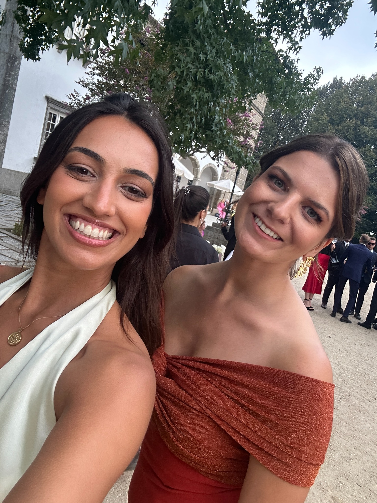
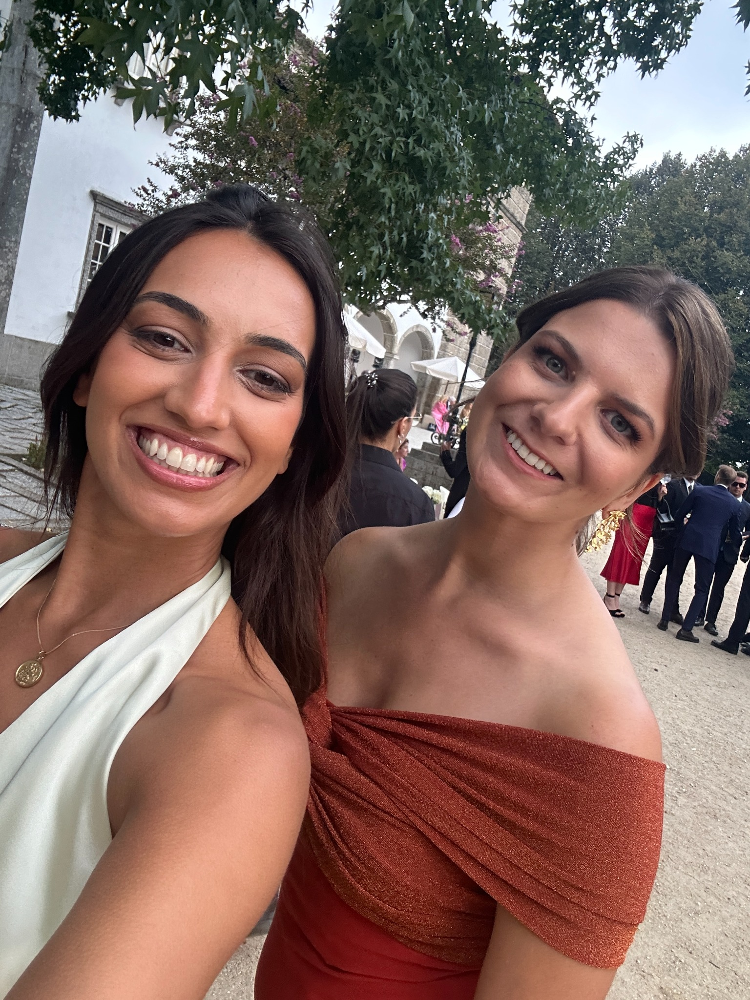

> Identificando utilizador...
> Nome: BEATRIZ

 

7️⃣ Amigo Secreto 2025
Uma amiga especial, destemida e sempre pronta para qualquer aventura, seja uma viagem espontânea ou uma saída inesperada.
Admiro a tua coragem natural e a tua forma de seguir sem medos, mesmo quando o mundo parece desafiar-te. Nem toda a gente consegue… mas tu consegues, e consegues muito bem.
Também tens uma habilidade única de perceber exatamente o momento certo para tudo: • quando é para rir até doer a barriga, lá estás tu • quando é para dar um raspanete, ou soltar o teu lado resmungão… também estás pronta ahah
Mas sabes que mais? É isso que faz de ti a nossa Bia: uma amiga de verdade, sem medos, protetora, leal, divertida (sim, muito divertida quando queres animar a malta).
Gosto muito de ti 💕e tu sabes. Somos muito diferentes uma da outra, e ainda bem. Acho que é precisamente isso que faz com que nos entendamos tão bem e que a nossa amizade tenha crescido como cresceu ao longo destes anos.
Guardo com carinho todos os momentos da nossa juventude: as saídas, as conversas intermináveis, as risadas, as bebedeiras juntas… e até o teu mau feitio. Tudo isso faz parte da nossa história e do que somos hoje.
Obrigada por seres a nossa Bia 💛